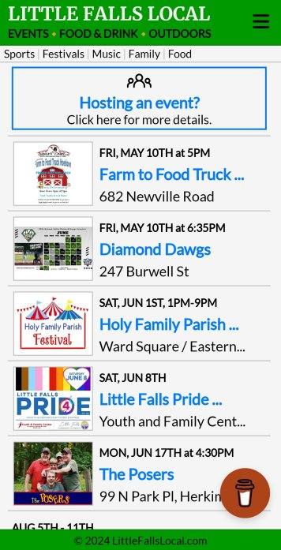
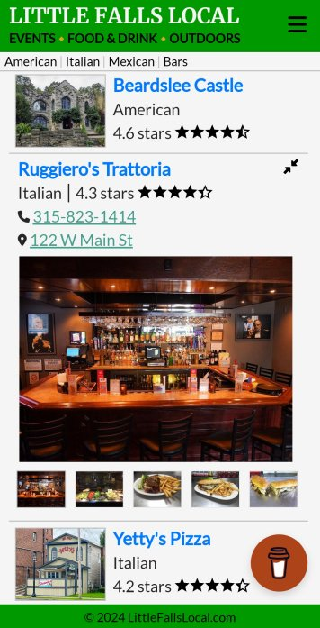
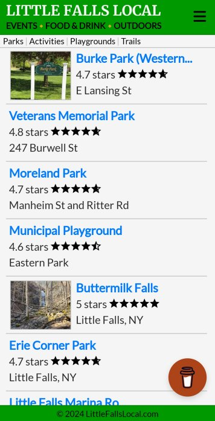

LittleFallsLocal is available exclusively for mobile and tablet users.
Ready to dive in? Scan the QR code, or go to LittleFallsLocal.com on your phone/tablet and download the Little Falls Local app now!
Dive into Local Events: We've got the lowdown on all the happenings. Stay in the loop and never miss out.
Savor Local Flavors: Our culinary compass will lead you straight to the heart of Little Falls' food scene.
Embrace Outdoor Adventures: Our town is a playground for outdoor enthusiasts. Explore scenic trails, tranquil parks, and hidden gems just waiting to be uncovered.
We aim to be your go-to app for all events, restaurants, and outdoor activities, in and around Little Falls, NY. If you're all about soaking up the vibrant essence of our beautiful town, you've landed at the perfect place.